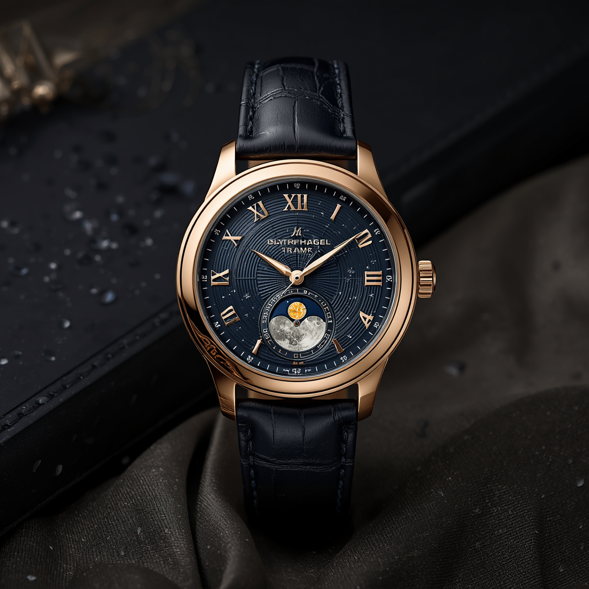

Let us be honest about what a moonphase complication does. It tells you the approximate phase of the moon. A piece of information you could obtain by looking out of a window, checking your phone, or simply going outside. In terms of practical utility, it ranks somewhere below a tachymeter scale and well below a date window.
And yet, the moonphase remains one of the most coveted complications in watchmaking. It appears on watches costing hundreds of thousands of pounds. Collectors who have owned chronographs, perpetual calendars, and minute repeaters often single out the moonphase as their favourite complication. Why?
The history: older than you think
Moonphase displays appear in pocket watches from the seventeenth century. They were genuinely useful when agriculture and navigation depended on knowing the lunar cycle. Farmers used them to plan planting. Sailors used them to predict tides. The complication was not decorative then. It was practical.
That practical origin gave it a kind of legitimacy that never fully disappeared, even as its usefulness did. When a watchmaker adds a moonphase today, they are participating in a tradition that stretches back four hundred years. That is not irrelevant.
The mechanics: more interesting than you expect
A traditional moonphase display uses a disc with two moon apertures that advances once every 24 hours and 50 minutes, matching the lunar synodic cycle of 29 days, 12 hours, 44 minutes and 3 seconds. A well-engineered moonphase will only require correction once every two to three years. A poorly engineered one will need it monthly.
The better ones use higher tooth counts on the driving gear to achieve greater accuracy. The A. Lange & Söhne Perpetual Calendar moonphase famously requires correction once every 122 years. That is not uselessness. That is a small masterpiece of engineering in service of something beautiful.
A well-made moonphase is a small masterpiece of engineering in service of something beautiful.
On the wrist: what it actually feels like
There is something that happens when you look at a moonphase display on a clear night and then look up at the sky. The match is either uncanny or slightly off, depending on how recently you set it. Either way, you feel connected to something larger than a meeting schedule.
That feeling is not nothing. Watches have always been about more than timekeeping. They are about meaning, about craft, about the human desire to measure and understand the world. A moonphase, more than almost any other complication, embodies that impulse without taking itself too seriously.
Which moonphase is worth buying?
At the entry level, the Longines Master Collection Moonphase offers a COSC-certified movement with a genuine moonphase display for around £2,000 to £2,500. It is exceptional value. Further up, the Jaeger-LeCoultre Master Ultra Thin Perpetual is the reference that serious collectors point to. At the top, the Patek Philippe 5711 with moonphase remains the gold standard against which everything else is measured.
The right answer depends on your budget and taste, which is precisely the kind of question that merits a proper recommendation.
If a moonphase is on your shortlist and you would like help choosing the right one, a Timepiece Scout report will give you three considered options specific to your brief.
Ready to find the watch that was made for you?
Get my personal report